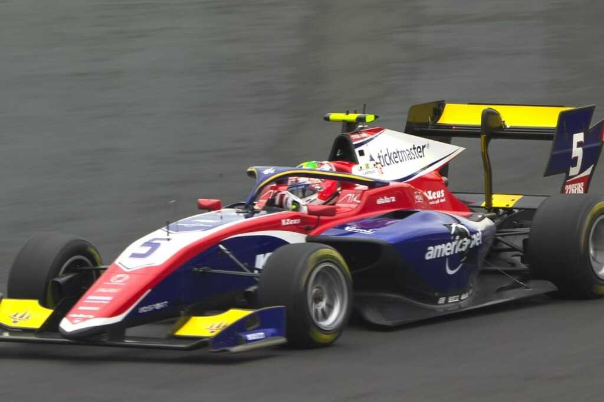
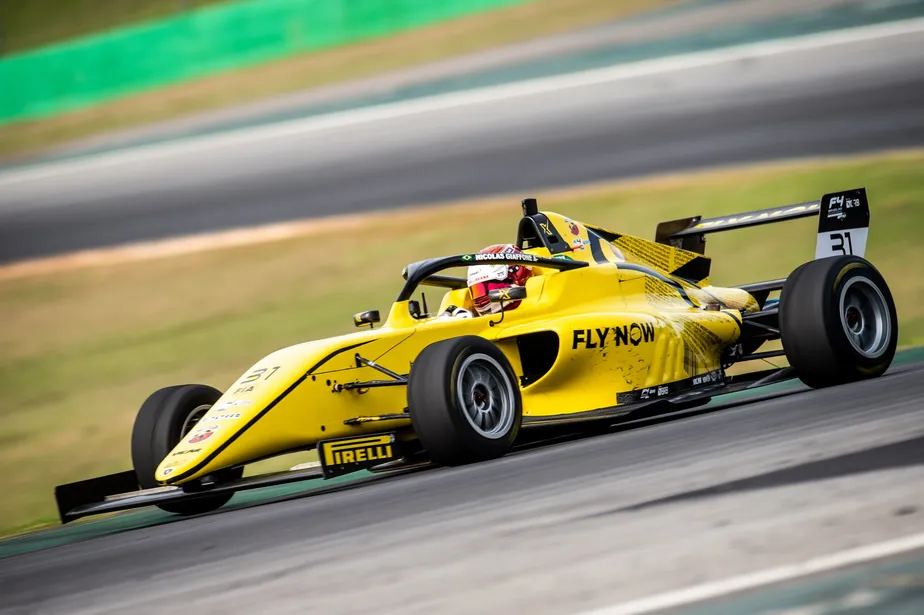

.png)
.png)
A Fórmula 1 é uma das competições esportivas mais populares e emocionantes do mundo. A velocidade, a habilidade e a estratégia envolvidas na condução de um carro de corrida a mais de 300 km/h fazem com que muitas pessoas questionem se a Fórmula 1 é realmente um esporte.
A Fórmula 1 é uma atividade emocionante que atrai fãs de todo o mundo. A velocidade e a emoção envolvidas nas corridas fazem com que seja uma experiência emocionante para todos os envolvidos. A competição também é um grande atrativo, com pilotos e equipes lutando por pontos em cada corrida, visando ao título de campeão mundial. Em resumo, a Fórmula 1 é um esporte emocionante e desafiador que envolve competição, habilidade, desempenho físico e mental e regras, sendo, portanto, uma atividade esportiva que requer muita dedicação, preparo e talento por parte dos pilotos e equipes envolvidos.
Com 72 anos de história, a Fórmula 1 é considerada a maior competição automobilística do
mundo. E a
popularidade do esporte só cresce! Recheada de corridas inesquecíveis, a competição registrou uma
audiência de 1,55 bilhão de pessoas em 2021, somando público, canais digitais e televisão.
Além disso, a F1 se tornou a liga esportiva que mais cresce nas redes sociais, com um total de quase 50
milhões de seguidores no Facebook, Twitter, Instagram, YouTube, TikTok e outras mídias, de acordo com
relatório divulgado pela própria liga.
A Fórmula 1 (F1) foi criada pela Federação Internacional de Automobilismo (FIA) e surgiu, oficialmente,
em 1950. A ideia era reunir todos os Grande Prêmios (GP) da Europa, que já aconteciam em países como
Inglaterra, França, Itália, Mônaco, Suíça e Bélgica, e criar um campeonato unificado.
O nome foi escolhido para representar a “fórmula” que todas as equipes devem seguir para construir seus
carros. Isso significa respeitar alguns critérios obrigatórios com relação ao tipo de motor, a
quantidade de cilindros e o tamanho do automóvel, por exemplo.
Essas regras foram instauradas para permitir uma competição equilibrada, ao mesmo tempo em que dá
liberdade para os engenheiros focarem nos detalhes e diferenciais de suas máquinas.
A primeira corrida oficial da Fórmula 1 aconteceu no dia 13 de maio de 1950, no circuito de Silverstone,
na Inglaterra. O vencedor foi o italiano Nino Farina, que pilotava um Alfa Romeo, considerado um dos
maiores fabricantes de carros da Europa, ao lado de nomes como Ferrari, Maserati e Mercedes.
Nos três primeiros anos de F1, o campeonato foi disputado apenas na Europa e nos Estados Unidos (em
Indianápolis). Foi somente em 1954 que a competição aconteceu fora desse circuito, na Argentina. Em
1958, foi a vez do Marrocos receber a Fórmula 1, se tornando o primeiro país africano a sediar o evento.
Duas décadas depois, em 1972, o Brasil teve a sua primeira prova oficial de F1, realizada no autódromo
de Interlagos. Neste ano, inclusive, são celebrados os 50 anos de Fórmula 1 em solo brasileiro!
A velocidade máxima atingida durante uma corrida pertence ao colombiano Juan Pablo Montoya, que chegou a 372,6
km/h, no Grande Prêmio da Itália, em 2005.
A Red Bull fez o pit stop mais rápido da história em 2019, ao trocar os quatro pneus do carro de Max Verstappen
em 1,82 segundo de acordo com a cronometragem oficial.
Em 2002, Michael Schumacher teve 100% de aproveitamento ao subir ao pódio em todas as 17 corridas que disputou
no ano.
O italiano Luigi Fagioli é o piloto mais velho a vencer uma corrida na Fórmula 1. Aos 53 anos de idade, ele foi
o primeiro colocado no GP da França, em 1951.
Ao todo, nove mulheres já participaram da Fórmula 1, sendo seis como pilotos oficiais e quatro como pilotos de
testes.
Em 1997, no Grande Prêmio da Europa, três pilotos tiveram o mesmo tempo de classificação para a pole position: 1
minuto e 21,072 segundos.
O circuito de Monza, na Itália, recebeu o maior número de corridas em toda a história da Fórmula 1, ficando de
fora somente em 1980, devido a reformas.
Em 2021, os quilômetros percorridos nas corridas de Fórmula 1 daria para dar três voltas completas na Terra:
foram 120 mil km rodados.
Um carro de Fórmula 1 chega aos 100 km/h em 2,6 segundos.
Devido ao esforço e ao calor, um piloto de Fórmula 1 perde uma média de 2 kg durante uma corrida.
Fórmula 2
Fórmula 2 é um tipo de corrida de fórmula criada em 1948.
Os carros da Fórmula 2 são carros maiores, com pneus mais largos, potência bem mais elevada,
com
620 cavalos, atingem 300 km/h, e algumas exigências da pilotagem os aproximam mais dos
modelos
da F1, como o piloto interagir com várias funções por meio de comandos instalados no
volante.
Fórmula 3
A Fórmula 3 é uma categoria de competição da classe dos monopostos. Os campeonatos realizados ao redor do mundo formam um passo importante para vários jovens pilotos. A categoria foi adotada na década de 1950 sob o nome de Fórmula Júnior. Os carros da Fórmula 3 têm motores que respondem com 240 cavalos de potência, usam pneus relativamente estreitos e chegam a 230 km/h.
Fórmula E
Fórmula E, ou Campeonato Mundial da ABB Fórmula E da FIA, é uma categoria de automobilismo organizada pela FIA com carros monopostos exclusivamente elétricos, cuja primeira temporada começou no ano de 2014.
 Fórmula Indy
Fórmula Indy
A Fórmula Indy é a principal categoria de automobilismo de monopostos sancionada da IndyCar.
O nome oficial Indy Racing League passou a ser usado a partir de 1996. A corrida mais
prestigiosa da IndyCar Series são as 500 Milhas de Indianápolis (realizadas desde 1911 no
circuito oval, durante o mês de maio), que possuem regras de classificação distintas e
número de inscritos maiores.
Fórmula 4
A Fórmula 4 Brazil Championship é uma série de corridas regulamentada pela FIA como um dos campeonatos de Fórmula 4 de países ao redor do mundo. O Campeonato Italiano de Fórmula 4 é a primeira série de corridas de fórmula a seguir os regulamentos da Fórmula 4 da FIA. A temporada inaugural foi o Campeonato Italiano de F4 de 2014, substituindo a Fórmula Abarth.
Fórmula Truck
Criada no fim dos anos 1980, seu nome original era Copa Brasil de Caminhões. Os veículos de corrida são caminhões superpotentes. As corridas têm um limite médio de velocidade, que não deve ultrapassar os 200 km/h.